Home / Past papers / MLP End Term / this paper
2023 Dec24: IIT M FN EXAM FDD1 - 24 Dec 2023
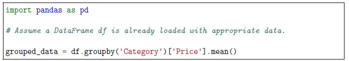
Consider the following Python code using Pandas: What does the groupby operation in the code achieve?- It calculates the total price for each category.
- It calculates the average price for each category.
- It groups the data by the ’Category’ column.
- It filters out rows where the ’Price’ column is zero.
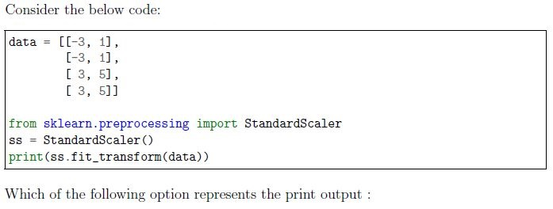
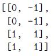
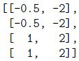
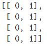
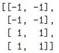
- RMSE
- R2
- Mean absolute error
- Mean squared error
- stochastic gradient descent
- mini gradient descent
- full batch gradient descent
- None of these
- Ridge regression is designed to handle class imbalance of the dataset.
- The regularization term in Ridge regression is added to the sum of absoluteresiduals.
- Increasing the value of the regularization parameter (alpha) in Ridgeregression makes the model less sensitive to high-magnitude coefficients.
- Ridge regression is equivalent to Lasso regression when the regularizationparameter (alpha) is set to zero.
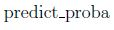
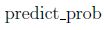
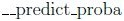
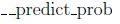
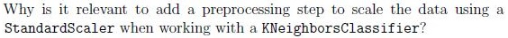
- Faster to compute the list of neighbors on scaled data.
- k-nearest neighbors is based on computing some distances. Features need tobe normalized to contribute approximately equally to the distance computation.
- Scaling the data has a negligible effect on k-nearest neighbor’s performance,but it enhances the interpretability of the model.
- This is irrelevant. One could use k-nearest neighbors without normalizing thedataset and get a very similar cross-validation score.
- The maximum number of documents considered during vectorization.
- The maximum number of features (words) to be extracted based on termfrequency.
- The maximum number of randomly selected features (words).
- The maximum number of characters allowed in each document.
- Increasing the value of min_samples_split
- Increasing the value of the pruning parameter
- Increasing the value of min_samples_leaf
- Increasing the depth of the tree
- Connectivity-based Clustering
- Centroids-based Clustering
- Density-based Clustering
- All of them
- Supervised learning
- Unsupervised learning
- Reinforcement learning
- None of these

- logistic
- relu
- identity
- tanh
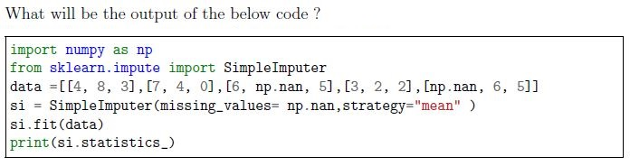
- [5, 5, 3.75]
- [5, 5, 3]
- [4, 4, 3]
- [4, 4, 3.75]
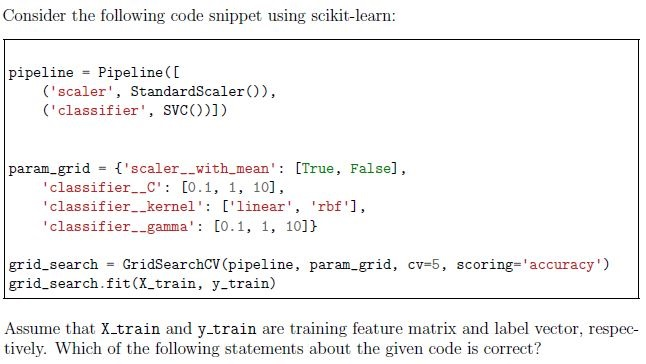
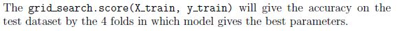
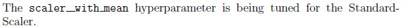
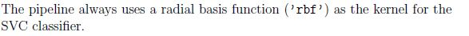
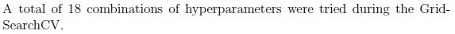
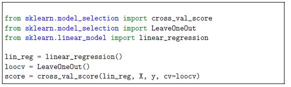
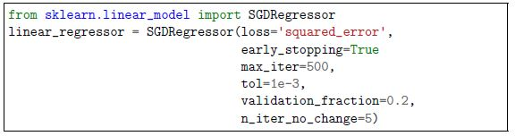
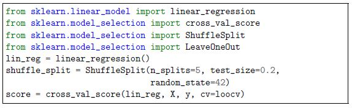
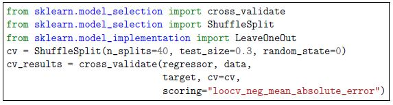
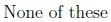
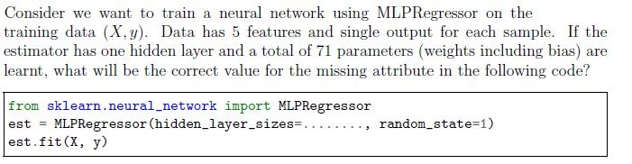
- (71)
- (71, 1)
- (10)
- (10, 2)
- Increasing the number of neurons in hidden layers will always lead to bettermodel performance.
- Decreasing the number of neurons in hidden layers reduces the model’scapacity to capture complex patterns.
- The number of neurons in hidden layers does not significantly affect themodel’s performance.
- Finding the optimal number of neurons is a trial-and-error process and mayrequire experimentation.
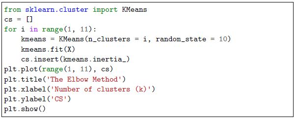
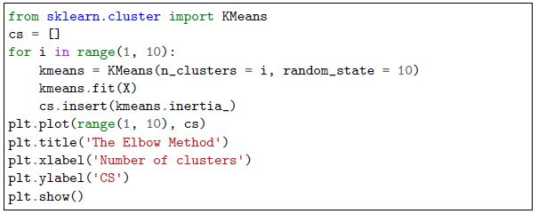
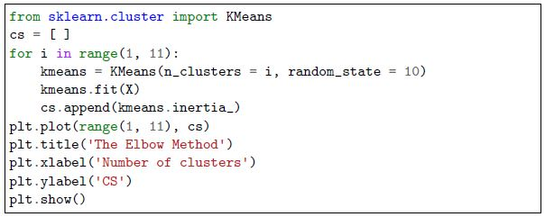
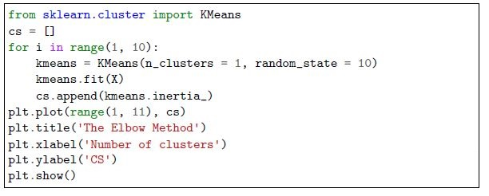
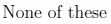
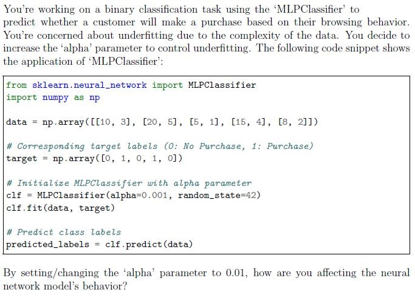
- Increasing the model’s complexity to fit the training data more closely.
- Adding a stronger regularization term to the loss function, discouragingcomplex models.
- Making the model more capable to learn more complex behaviour.
- Adjusting the learning rate to control convergence speed.
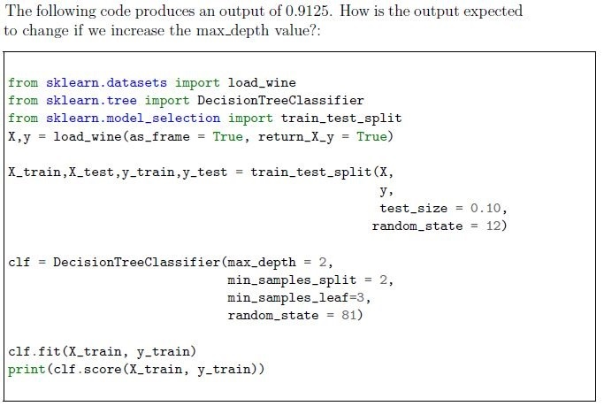
- Output score is likely to increase.
- Output score is likely to decrease.
- Output score may increase or decrease.
- Output score will remain the same.
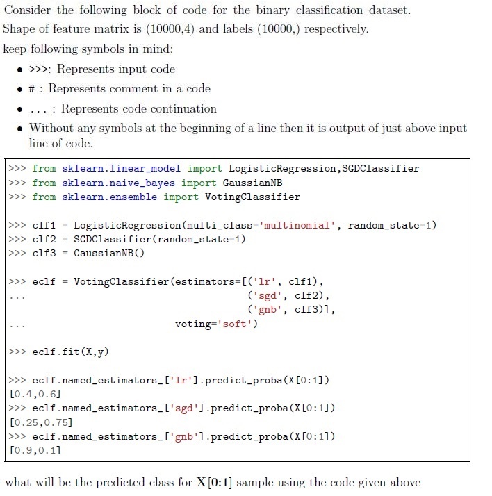
- 0
- 1
- 2
- 3

- Above code uses bootstrapping to generate samples for each base classifier.
- model will be tested on out of the bags samples.
- Due to weights=’distance’, each base KNN classifier will treat all neighborsequally in terms of voting power.
- The ensemble will consist of 3 base KNN classifiers.
- None of these
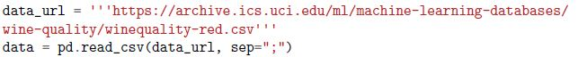
Consider a dataset representing various attributes of red wine, loaded into a Pandas DataFrame named data using the following code: Suppose we are interested in extracting the value of the chlorides attribute for the third sample in the dataset (2nd by index). Which of the following expressions correctly achieves this? chlorides is at the 4th index of columns.- data.chlorides[2]
- data[’chlorides’][2]
- data[2][4]
- data.iloc[2, 4]
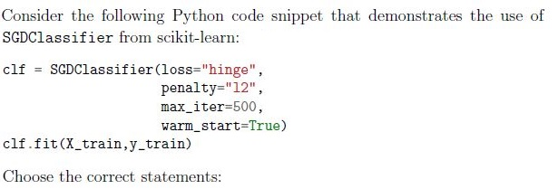
- It applies lasso penalty.
- The training may terminate after 499 iterations or lesser
- the classifier represents a perceptron model
- The classifier’s model parameters will initialized with parameters learnt fromprevious call to fit() function, if the same object is trained/fitted multiple times on new data.
- The data set size is 1000 GB.
- The model has to be trained in non-iterative manner.
- The model must be a decision tree.
- The model must be a logistic regressor.
- None of these
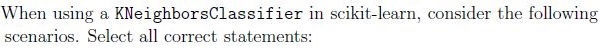
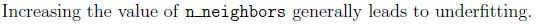
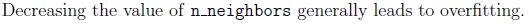
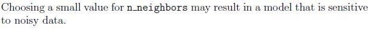
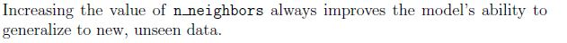
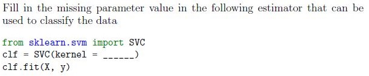
- ‘poly’,
- ‘lasso’
- ‘rbf’,
- ‘scale’
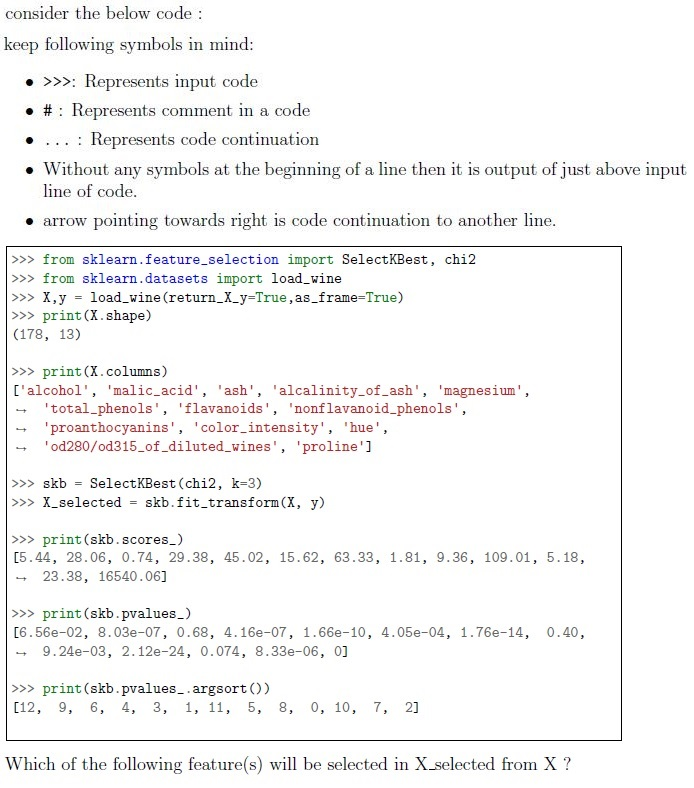
- malic_acid
- magnesium
- flavanoids
- proanthocyanins
- color_intensity
- proline
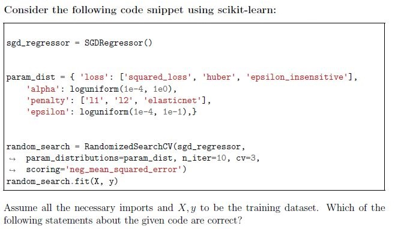
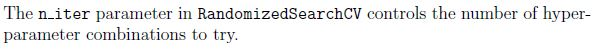
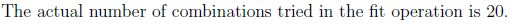
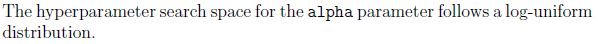
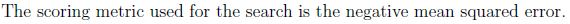
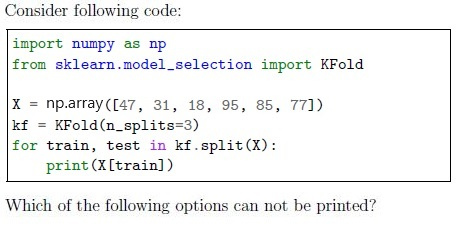
- [47, 31, 18, 95, 77]
- [47, 31, 18 ]
- [31, 41, 18, 95, 85, 77]
- [31, 41, 85, 31]
- [18, 95, 85, 77]
- [47, 31, 18, 85]
- None of these
- Smaller values of C result in a more complex decision boundary.
- Larger values of C result in a more complex decision boundary.
- The decision boundary becomes simpler with increasing values of C.
- Very large values of C may lead to overfitting.
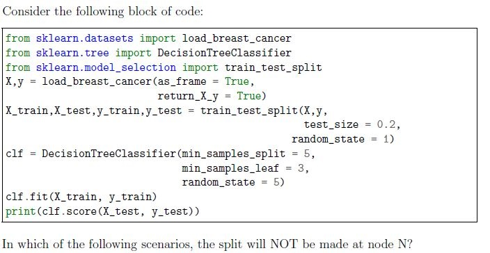
- Number of samples at node N = 10. If it is split, it will result in 2 nodes in theleft child and 8 nodes in the right child.
- Number of samples at node N = 6. If it is split, it will result in 3 nodes in the leftchild and 3 nodes in the right child.
- Number of samples at node N = 12. If it is split, it will result in 5 nodes in theleft child and 7 nodes in the right child.
- Number of samples at node N = 4. If it is split, it will result in 3 nodes in the leftchild and 1 node in the right child.
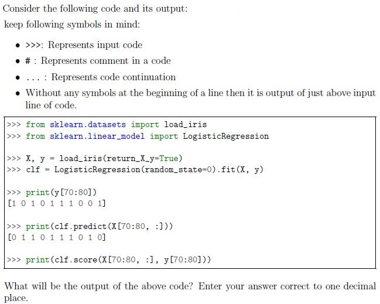
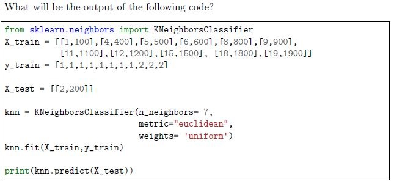
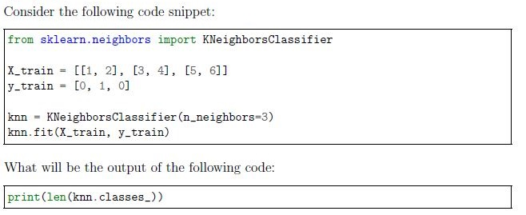
- StandardScaler()
- OrdinalEncoder()
- MinMaxScaler()
- LabelEncoder()
Answer key
- Q1 (MCQ, 2 marks): B
- Q2 (MCQ, 2 marks): D
- Q3 (MCQ, 2 marks): B
- Q4 (MCQ, 2 marks): A
- Q5 (MCQ, 2 marks): C
- Q6 (MCQ, 2 marks): A
- Q7 (MCQ, 2 marks): B
- Q8 (MCQ, 2 marks): B
- Q9 (MCQ, 2 marks): D
- Q10 (MCQ, 2 marks): D
- Q11 (MCQ, 2 marks): B
- Q12 (MCQ, 2 marks): C
- Q13 (MCQ, 3 marks): B
- Q14 (MCQ, 3 marks): B
- Q15 (MCQ, 3 marks): A
- Q16 (MCQ, 3 marks): C
- Q17 (MCQ, 3 marks): D
- Q18 (MCQ, 3 marks): C
- Q19 (MCQ, 3 marks): C
- Q20 (MCQ, 4 marks): A
- Q21 (MCQ, 4 marks): B
- Q22 (MCQ, 4 marks): E
- Q23 (MSQ, 2 marks): A, B, D
- Q24 (MSQ, 2 marks): B, D
- Q25 (MSQ, 2 marks): A, D
- Q26 (MSQ, 2 marks): A, C
- Q27 (MSQ, 2 marks): A, C
- Q28 (MSQ, 3 marks): C, E, F
- Q29 (MSQ, 3 marks): A, C, D
- Q30 (MSQ, 3 marks): A, B, C, D
- Q31 (MSQ, 3 marks): B, D
- Q32 (MSQ, 4 marks): A, D
- Q33 (SA, 3 marks): 0.6
- Q34 (SA, 3 marks): 1
- Q35 (SA, 2 marks): 2
- Q36 (SA, 4 marks): 500
- Q37 (SA, 3 marks): 73 to 75
- Q38 (MSQ, 2 marks): A, C
Concepts this paper tests
Auto-generated summary from the source site. Handy as a checklist; the lessons above explain each idea from scratch.
Here’s a structured summary of core topics, concepts, principles, and equations essential for the Diploma Level: Machine Learning Practice (Computer-Based Exam). The exam covers Pandas, scikit-learn, ML algorithms, preprocessing, model evaluation, hyperparameter tuning, and clustering. --- ---
1. Core Topics & Concepts
A. Data Preprocessing
StandardScaler
- Standardizes features to have mean = 0 and std = 1.
- Formula:
- Why? Critical for distance-based algorithms (e.g., KNN, SVM, K-Means).
Example:
from sklearn.preprocessing import StandardScaler ss = StandardScaler() scaled_data = ss.fit_transform(data)
One-Hot Encoding (
OneHotEncoder)- Converts categorical features into binary columns.
- Avoids ordinal bias (unlike
LabelEncoder). Example:
from sklearn.preprocessing import OneHotEncoder ohe = OneHotEncoder(sparse_output=False) encoded = ohe.fit_transform(df[['category']])
Feature Selection (
SelectKBest)- Selects top
kfeatures based on statistical tests (e.g.,chi2,f_classif). Example:
from sklearn.feature_selection import SelectKBest, chi2 skb = SelectKBest(chi2, k=3) X_selected = skb.fit_transform(X, y)
- Selects top
Train-Test Split
- Splits data into training and testing sets.
Example:
from sklearn.model_selection import train_test_split X_train, X_test, y_train, y_test = train_test_split(X, y, test_size=0.2, random_state=42)
B. Supervised Learning
Linear Regression
- Predicts continuous output using linear relationship:
- Coefficients (
coef_) and intercept (intercept_) are learned during training.
Ridge Regression (L2 Regularization)
- Penalizes large coefficients to prevent overfitting.
- Loss function:
- Hyperparameter:
alpha(higheralpha→ more regularization).
Decision Trees
- Splits data based on feature thresholds to minimize impurity (Gini/entropy).
Hyperparameters:
max_depth: Maximum tree depth.min_samples_split: Minimum samples required to split a node.min_samples_leaf: Minimum samples required in a leaf.
- Overfitting Risk: Deeper trees → higher variance.
Support Vector Machines (SVM)
- Finds the optimal hyperplane to separate classes.
- Kernel Trick: Transforms data into higher dimensions (
linear,poly,rbf). Regularization Parameter (
C):- Small
C→ wider margin (simpler model). - Large
C→ narrower margin (complex model, risk of overfitting).
- Small
k-Nearest Neighbors (KNN)
- Classifies based on majority vote of
knearest neighbors. - Distance Metrics: Euclidean, Manhattan.
- Why Scale? Features must be normalized to avoid bias toward high-magnitude features.
- Classifies based on majority vote of
Stochastic Gradient Descent (SGD)
- Optimizes loss functions iteratively (used in
SGDClassifier,SGDRegressor). Variants:
- Full Batch: Uses entire dataset per update.
- Mini-Batch: Uses random subset (mini-batch) per update.
- Stochastic: Uses 1 sample per update.
Loss Functions:
hinge(SVM),log_loss(logistic regression),squared_error(regression).
Regularization:
l1(Lasso),l2(Ridge),elasticnet(combination).
Hyperparameters:
alpha: Learning rate.penalty: Regularization type.max_iter: Maximum epochs.
- Optimizes loss functions iteratively (used in
Neural Networks (
MLPClassifier/MLPRegressor)Activation Functions:
- Hidden layers:
relu,tanh,logistic. Output layer:
- Regression:
identity. - Classification:
logistic(binary) orsoftmax(multiclass).
- Regression:
- Hidden layers:
Hyperparameters:
hidden_layer_sizes: Number of neurons per layer (e.g.,(100, 50)).activation: Activation function for hidden layers.solver: Optimization algorithm (adam,sgd).
C. Model Evaluation
Regression Metrics
R² (R-squared):
- Range: [0, 1] (higher = better).
- Formula:
RMSE (Root Mean Squared Error):
- Lower = better.
- Formula:
MAE (Mean Absolute Error):
- Lower = better.
- Formula:
Classification Metrics
- Accuracy:
(TP + TN) / (TP + TN + FP + FN). - Precision:
TP / (TP + FP). - Recall:
TP / (TP + FN). - F1-Score: Harmonic mean of precision and recall.
- Accuracy:
Cross-Validation
- k-Fold CV: Splits data into
kfolds; trains onk-1folds, tests on 1. - Leave-One-Out (LOO): Extreme case of k-Fold where
k = n_samples. Example:
from sklearn.model_selection import cross_val_score, KFold kf = KFold(n_splits=5) scores = cross_val_score(model, X, y, cv=kf)
- k-Fold CV: Splits data into
Grid Search & Random Search
- GridSearchCV: Exhaustively searches all hyperparameter combinations.
- RandomizedSearchCV: Samples random combinations (faster for large spaces).
Example:
from sklearn.model_selection import GridSearchCV param_grid = {'C': [0.1, 1, 10], 'kernel': ['linear', 'rbf']} grid = GridSearchCV(SVC(), param_grid, cv=5) grid.fit(X, y)
D. Unsupervised Learning
Clustering Methods
Centroid-Based (e.g., K-Means):
- Assigns points to nearest centroid; updates centroids iteratively.
Density-Based (e.g., DBSCAN):
- Groups points in dense regions; marks outliers.
Connectivity-Based (e.g., Hierarchical Clustering):
- Builds a tree of clusters (agglomerative/divisive).
Elbow Method (for K-Means)
- Plots inertia (within-cluster sum of squares) vs.
kto find optimalk. Example:
inertias = [] for k in range(1, 11): kmeans = KMeans(n_clusters=k).fit(X) inertias.append(kmeans.inertia_) plt.plot(range(1, 11), inertias)
- Plots inertia (within-cluster sum of squares) vs.
E. Ensemble Methods
Random Forest
- Ensemble of decision trees; reduces variance via bagging.
Hyperparameters:
n_estimators: Number of trees.max_depth: Depth of each tree.
Bagging (Bootstrap Aggregating)
- Trains multiple models on bootstrapped samples; averages predictions.
- Example:
BaggingClassifierwithKNeighborsClassifier.
F. Dimensionality Reduction
Feature Selection vs. Extraction
- Selection: Chooses subset of features (e.g.,
SelectKBest). - Extraction: Transforms features (e.g., PCA).
- Selection: Chooses subset of features (e.g.,
G. Pandas Operations
GroupBy
- Groups data by a column and applies aggregations (e.g.,
mean,sum). Example:
df.groupby('Category')['Price'].mean()
- Groups data by a column and applies aggregations (e.g.,
Data Access
df['column'],df.column,df.iloc[row, col],df.loc[row_index, 'column'].
2. Key Equations
| Concept | Equation |
|---|---|
| Standard Scaling | |
| R² Score | |
| RMSE | |
| Ridge Regression Loss | |
| Linear Regression | |
| SVM Margin (Hard) | s.t. |
| KNN Distance (Euclidean) | |
| Decision Tree Gini Impurity |
Graph 2: Unsupervised Learning
Graph 3: Model Evaluation & Hyperparameter Tuning
Graph 4: scikit-learn Key Classes
4. Exam Tips
Pandas:
- Know
groupby,iloc,loc, and column access methods.
- Know
Preprocessing:
- Always scale for distance-based models (KNN, SVM, K-Means).
- Use
OneHotEncoderfor categorical features (avoidLabelEncoderfor non-ordinal data).
Model Selection:
- Overfitting: Prune trees (
max_depth,min_samples_leaf), use regularization (Ridge/Lasso). - Underfitting: Increase model complexity (deeper trees, more features).
- Overfitting: Prune trees (
SGD:
warm_start=Trueretains weights between.fit()calls.hingeloss → SVM;log_loss→ logistic regression.
Clustering:
- K-Means: Needs scaled data; use the elbow method for
k.
- K-Means: Needs scaled data; use the elbow method for
Neural Networks:
Output layer activation:
- Regression:
identity. - Binary classification:
logistic. - Multiclass:
softmax.
- Regression:
Hyperparameter Tuning:
GridSearchCVfor small spaces;RandomizedSearchCVfor large spaces.